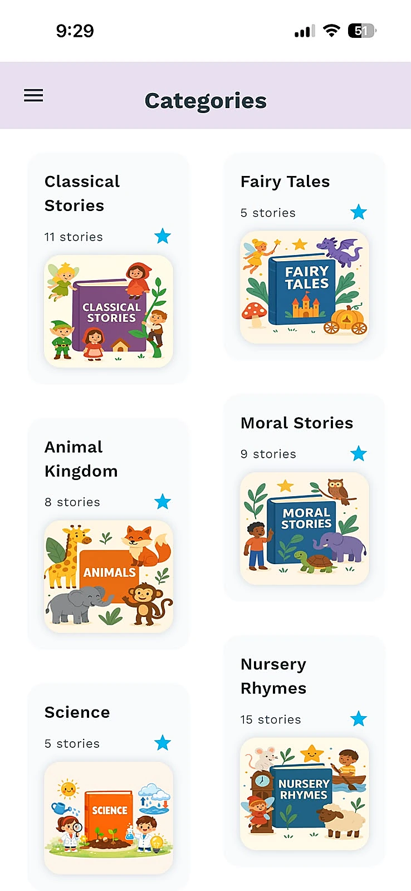
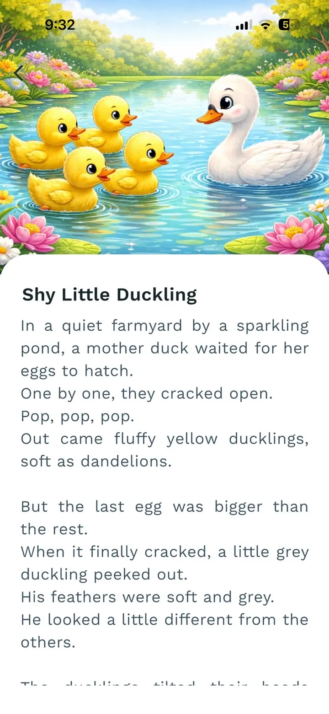
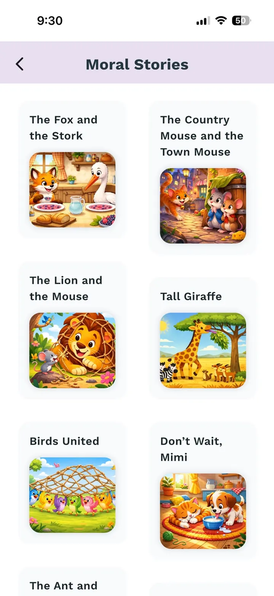

Bedtime stories for kids
Discover original read-aloud tales for toddlers, preschoolers, and young children, inspired by everyday adventures and calming themes.
Baboo Stories
Baboo Stories helps families share short, kind stories for bedtime, quiet time, and everyday reading together without autoplay videos or distracting screens.
Download Baboo Stories on iPhone or Android and keep a calm story library ready for bedtime, weekend quiet time, and small connection moments after busy days.



Gentle stories parents read aloud, without scary endings, noisy screens, or overstimulation.
Curated story collections tailored to your child's mood, energy, and developmental stage.
Crafted prompts that nurture empathy, imagination, and curiosity through guided questions and reflection moments.
Pick a story, start reading, and follow quick prompts with no prep or screens required for calm connection.
Focus on parent-child bonding with voice-first experiences and calm visual cues, never distracting screens.
Parents searching for calmer nights still need a story app that works beyond bedtime. Baboo Stories keeps the focus on connection, imagination, and gentle read-aloud moments.
Discover original read-aloud tales for toddlers, preschoolers, and young children, inspired by everyday adventures and calming themes.
Conversation starters and imagination boosters help you turn each story into a small moment of bonding, reflection, and language growth.
Keep bedtime simple with story sessions designed for weeknights, weekends, and the nights when everyone needs to settle quickly.
Bedtime is a natural place to begin, but Baboo is made for every calm reading moment when a parent and child want to slow down together.
Short, gentle stories help children settle without loud videos, scary endings, or one more overstimulating feed.
Keep simple stories ready for slow afternoons, travel breaks, and the in-between moments when everyone needs a softer pace.
Parent prompts make it easy to talk, laugh, adapt the story, and bring your own voice into the moment.
If you found us while looking for bedtime stories, toddler reading ideas, calming routines, or a kids story app that still keeps parents involved, Baboo Stories was built for you.
“Baboo Stories has turned bedtime into our favourite part of the day. My daughter now reminds me when it's story time!”
“The prompts help me connect with my son on tough days. We laugh, reflect, and even problem-solve together.”
“I love that Baboo Stories values calm design and lets my kids use their imagination rather than stare at screens.”
Fresh tips, rituals, and prompts to keep storytime inspiring. Explore the newest reads or browse the full library.
Learn how to choose gentle stories with small problems, kind helpers, safe endings, and less bedtime worry.
Read the non-scary guideFind calm story themes, read-aloud tips, and one-question prompts for worried nights.
Read the calm story guideChoose a short bedtime story for the mood your child actually has tonight: sleepy, worried, silly, sad, or curious.
Read the mood guideBaboo Stories is a gentle story app for parents and caregivers who want calming read-aloud stories, conversation prompts, and simple story moments with young children.
Yes. Baboo Stories is designed for families with toddlers and young children, with gentle stories, short sessions, and parent-led prompts that make bedtime easier. See our guide to bedtime stories for 2-year-olds for age-appropriate story ideas.
No. Baboo Stories supports parent-child connection by giving parents ready-to-use stories and questions they can read, discuss, and personalize together. For a deeper comparison, read about the best bedtime story app for toddlers.
Download Baboo Stories on iPhone or Android for gentle stories you can read aloud at bedtime, quiet time, and everyday family moments.